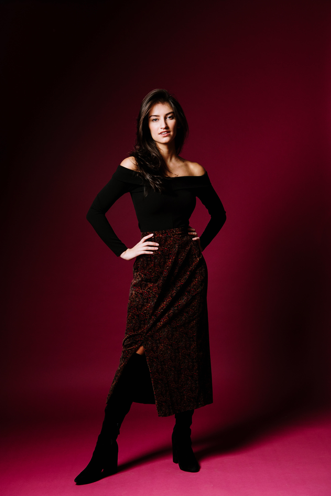
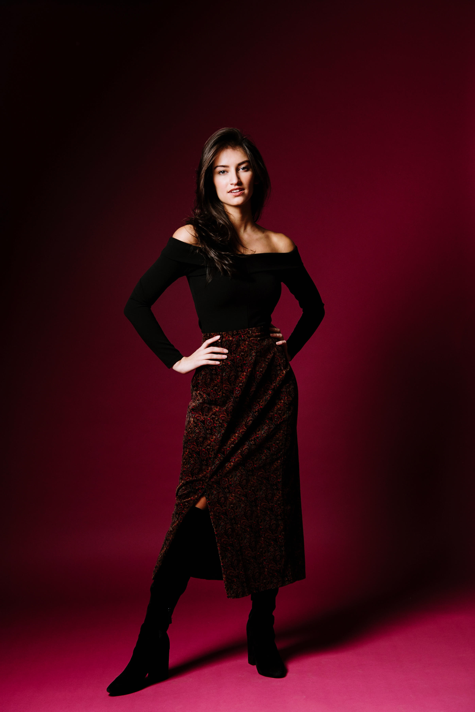
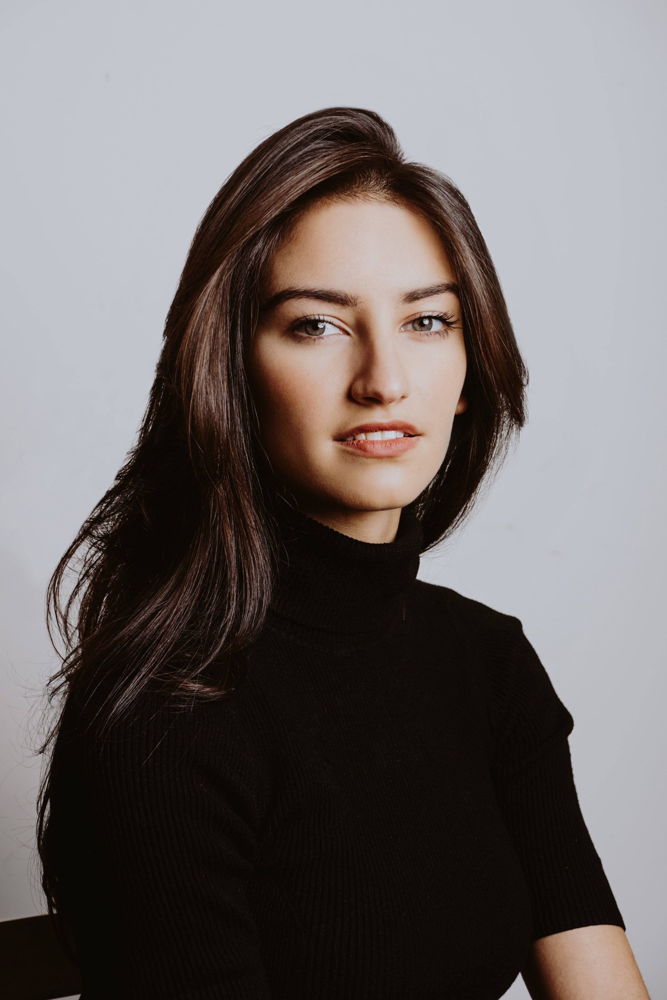
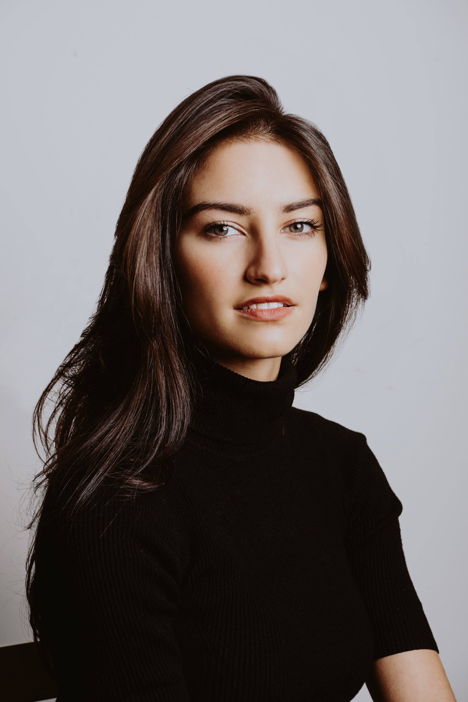

Sonya Balsara is an actress, singer, and model based in New York City. A recent graduate of NYU Tisch School of the Arts, she studied Musical Theatre at the New Studio on Broadway, film acting at Stonestreet studios and entertainment business at the Stern School of Business and Steinhardt.
She has most recently been seen on Mozart in the Jungle Season 4, has filmed commercials for New York Fashion Week and Extra Gum on MTV, and has been featured in latin singer-songwriter Sebastian Coloma's music video "Dime Tu." In the coming year, she will be featured in ThredUp's new social media campaign and can be found in the indie feature film Boarding School directed by Boaz Yakin (Uptown Girls, Remember the Titans), which will be released internationally this year.
Raised by Rita Lilly, a professional classical singer native to New York and Nitash Balsara, a polymer scientist from India, Sonya is fascinated by multiculturalism, art, and discovering how to make the world better, safer, and more inclusive. She finds inspiration in exploring the world through hiking, volunteering, and traveling.


 


 
